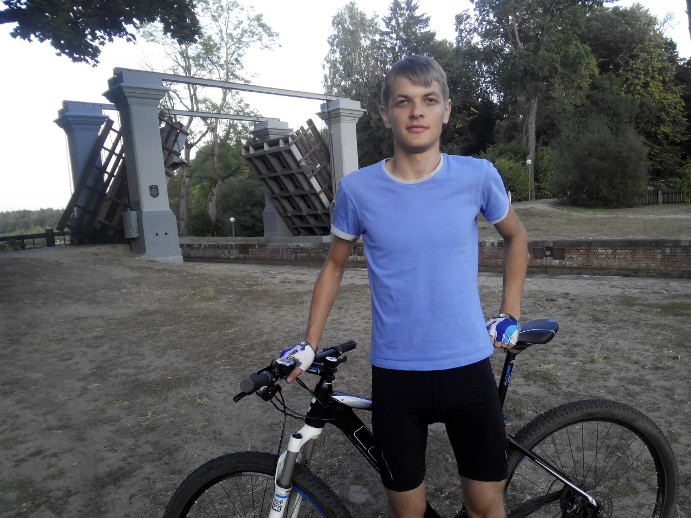

 Меня зовут Александр, я родился 3 января 1994 года в Гродно. Как и все дети я ходил в садик, потом в 7 лет я пошел в 10 школу. С детства меня тянуло к электронике, по этому после 9 класса я поступил в политехнический колледж на специальность "вычислительные машины системы и сети". У нас была очень дружная и веселая группа. Преподаватели тоже были очень умные и интересные люди. Учиться мне было интересно и за время, проведённое в колледже, я узнал много нового. В 2013 году я окончил колледж, далее я задумался о поступлении в ВУЗ. Мой выбор пал на физтех ГрГу им Янки Купалы. Там я закончил бакалавреат по специальности Физика, производственная деятельность.Во время учебы я подрабатывал в компании Белтелеком. Работал я электромехаником связи. Когда я получил диплом бакалавра, пришло время распределяться. В белтелекоме мест для распределения небыло и я устроился инженером техподдержки в ГОТТЦ "Гарант". Так получилось, что я поступил в магистратуру на бюджетное место по специальности "Современные методы и аппаратура физических измерений". Я учился и параллельно работал. Во время учебы я участвовал в различных конференциях, таких как "Физика конденсированного состояния", "Конференция интернет вещей IoT". Когда учеба подходила к концу и пришло время распределяться, в нашей организации уволились 2 ведущих системных администратора и мне и моему коллеге предложили занять их место. Я был рад, что получил новую должность, потому, что на ней я получаю много опыта работы с современными технологиями в сфере передачи данных. Для работы в новой должности мне пришлось изучить оборудование Cisco,Mikrotik, Hp,SNR и др. Пришлось углубленно изучить операционную систему Linux , осзакомиться с принципами написания скриптов на языке Bash. В 2019 году я поступил в магистратуру по специальности Инновационные технологии в машиностроении, которую планирую окончить в 2020 году.
В свободное время я увлекаюсь велоспортом, часто катаюсь в лесопарке Пышки. Несколько раз принимал участие в соревнованиях "три версты". Так же люблю плавание,часто хожу в ФОК. Но самое любимое увлечение у меня-это электроника. Я собираю разные штуки из радиодеталей, программирую под ардуино. Ради интереса собирал систему "умный дом", изготавливал контроллеры для управления двигателем, светомузыку и другие поделки. "Игрался" с высоким напряжением, для этого использовал трансформатор ТДКС из старого телевизора. Однажды мне попался трансформатор от микроволновки и мне пришла идея сделать из него точеную сварку. В последнее время я увлекаюсь программированием, для этого пришлось ознакомиться с языком расметки HTML, таблицей стилей CSS, препроцессором Sass и языком программирования JavaScript. В дальнейшем я хочу более глубоко изучить JavaScript и фреймворк React.